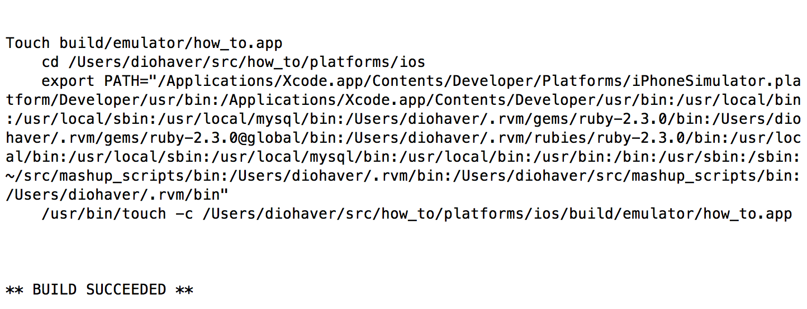
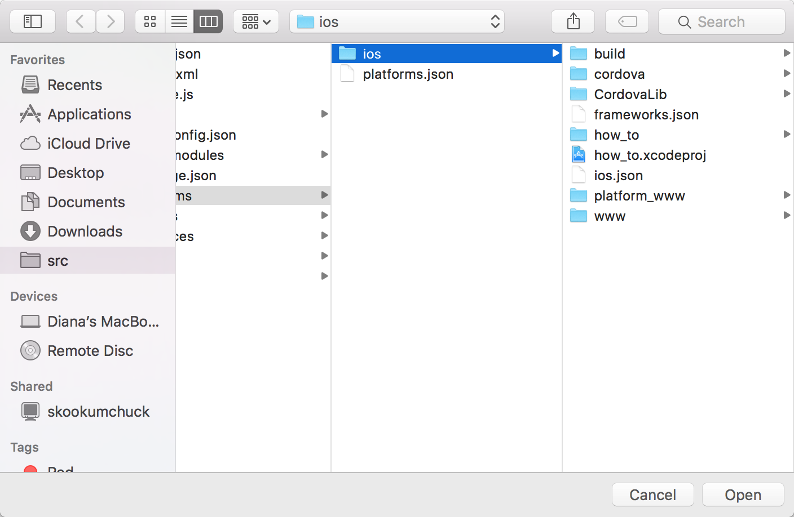
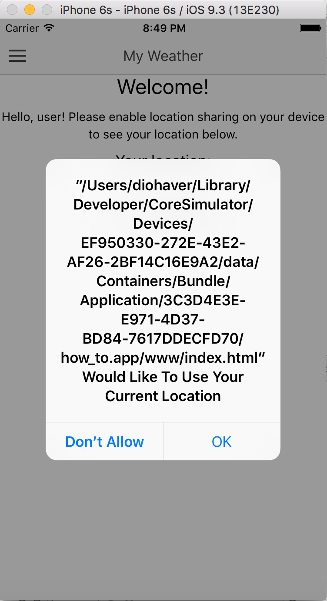
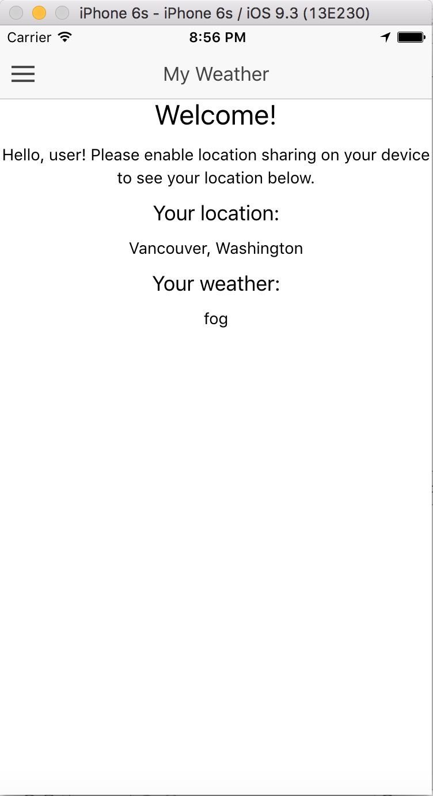

Up until this point, we've been using the browser preview to see the changes made to our app. Assuming that one eventually wants to make more complex apps with Ionic, it is important to note that some of the input validations that perform as expected in Chrome do not perform the same while running in the Xcode emulator. Additionally, if you branch out into creating forms that POST to an API, you'll likely run into issues with the header files being passed back and forth.
The ionic build command is used to build an Ionic app into either Android or iOS. We're using the Xcode emulator, so ionic build ios will build your app.

Once the app has been built, you'll find a file with a .xcodeproj extension in platforms/ios/. It will be named the same as your project name, so in this case, the file is how_to.xcodeproj.

Using Xcode, open the project file and press the Play button in the upper lefthand corner. This will build the project in Xcode. Xcode will prompt you to allow sharing your location:

Once you've allowed sharing your location, you'll notice that the location and the weather populates much faster in the emulator than it does in the browser preview.

A couple of notes before we wrap this up:
Product menu, find the Scheme submenu, and ensure that how_to is the selected scheme to build.{"code":2,"message":"The operation couldn’t be completed. (kCLErrorDomain error 0.)"}. The solution to this is to quit the emulator and rebuild the project.Debug menu in the emulator, finding the Location submenu, and changing the Custom location there.And that's a a wrap!